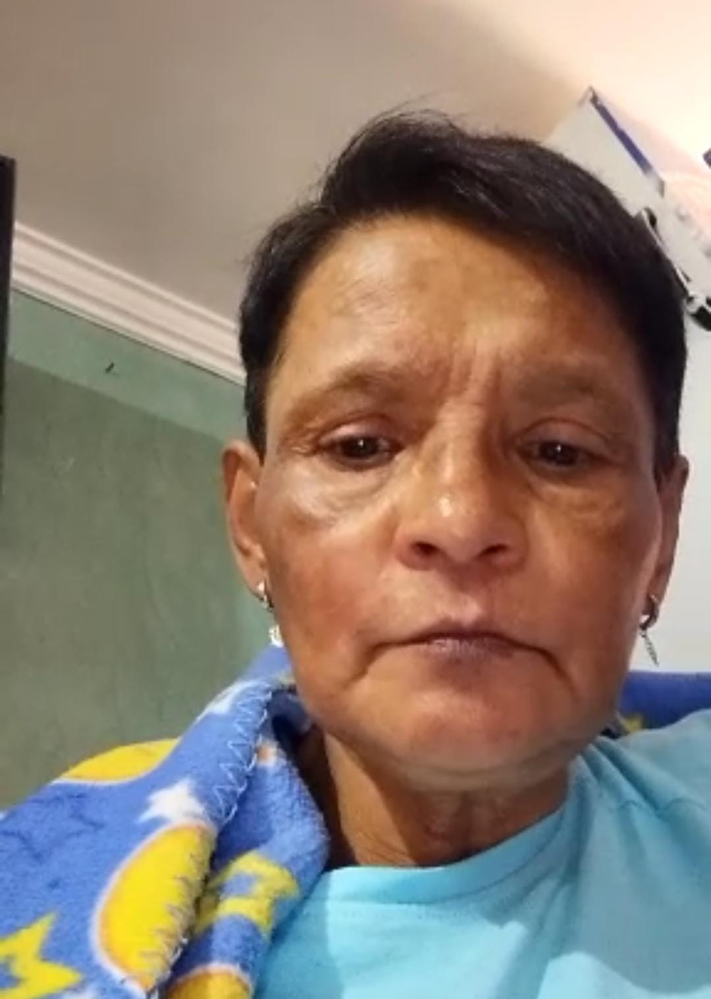

👤 Inés Romero
Si me encontraste desorientada o perdida,
por favor ayúdame a regresar a casa 🙏
⚠️ Información médica importante:
Persona con accidente cerebrovascular.
Puede estar desorientada.
📞 En caso de emergencia contactar a:
3174199958
3203013598
3201218479